Last updated: 2017-10-31
Code version: 8065fdb
QC for the image data. Results are described as follows.
No. of nuclei detected
DAPI intensity
For each single cell sample, we computed the sum of DAPI pixel intensity in the nucleus area. We observed that there’s a significant variation in DAPI intensity across plates. This is not surprising given that experimentally the plates are prepared imaged on different days, and further biologically the plates contain different combination of individual cell lines. More importantly, we should consider individual variation in cell cycle phase - because individual cell lines can incorporate the cell cycle proteins at different rates (need to clarify more…).
Looking at the DAPI noise intensity. The average level is between 0 to .1, which is very small compared to the DAPI signal intensity .1 to 1.
Relationship between DAPI and green/red (Note that we should consider Red and Green separately for their relationship with DAPI.) We observed that the Red signal distribution is almost uniform across the DAPI intensity range, making it difficult to discern differences between positive/negative Red. On the other hand, the Green signal distribution varies across DAPI intensity ranges.
There doesn’t appear to be plate variation in the relationship between Red/Green and DAPI.
Background/Foreground intensity variation
Saturation: at high pixel intensity, the signal intensites are mostly saturated (median ~ 1 and median > mean). And this is more so for Green than for Red. But note that this may have to do with the area from which we compute the pixel intensities. For many of the single cell samples, the cell cycle proteins are outside of the nucleus and are mostly concentrated at the nucleus. If we consider the area outside of the nucleus, we may be better differentiation between signals at high pixel intensities.
Background intensity by plate: mostly similar between plates in both Red and Green. In Red, there’s one plate that have some high background samples: 18855_19098. Mark this one to be investigated for later.
Next step:
For each single nucleus sample, compute sum of intensity in a fix 100 by 100 pixel area. This is an attempt to capture fluorescent intensity of the proteins in the entire cell, instead of just within the nucleus area as we have now.
Account for individual variation in cell cycle phase. This will be done once we have the individual labels from sequencing data.
library(ggplot2)
library(cowplot)
library(wesanderson)Name all plates.
plates <- c("18511_18855","18855_19101","18855_19160","18870_18511",
"18870_18855","18870_19101","18870_19160","19098_18511",
"19098_18870","19098_19160","19101_18511","19101_19098",
"19160_18870","19101_19160","19160_18511", "18855_19098")Name data directories.
# Make directory shortcuts.
dir_nuclei <- paste0("/project2/gilad/fucci-seq/intensities/")
#dir_ints_long <- paste0("/project2/gilad/joycehsiao/fucci-seq/output_tmp/")
#rds <- paste0(dir_ints, plate, ".tmp.2.rds")
dir_output_tmp <- ("/project2/gilad/joycehsiao/fucci-seq/output_tmp")Notes:
nuclei_table <- readRDS(paste0(dir_output_tmp, "/", "nuclei_table.rds"))
with(nuclei_table, table(nnuclei))nnuclei
0 1 2 3 4 5 6 7 8 12 20
4 1264 141 53 21 14 2 2 2 1 1 with(nuclei_table, table(plate, nnuclei)) nnuclei
plate 0 1 2 3 4 5 6 7 8 12 20
18511_18855 0 78 11 2 0 1 0 1 1 0 0
18855_19098 0 76 12 4 1 1 0 0 0 0 0
18855_19101 0 71 13 5 3 1 1 0 0 0 0
18855_19160 0 87 4 3 1 0 0 0 0 0 0
18870_18511 1 80 3 5 1 1 0 0 0 0 0
18870_18855 0 86 6 1 0 1 0 0 0 0 0
18870_19101 0 83 7 2 0 1 0 0 0 0 0
18870_19160 0 80 5 4 4 1 0 0 0 0 1
19098_18511 0 82 8 3 1 2 0 0 0 0 0
19098_18870 0 89 2 2 0 2 0 0 0 0 0
19098_19160 1 77 10 1 2 1 0 0 0 0 0
19101_18511 0 73 9 7 2 1 0 0 1 0 0
19101_19098 0 83 9 2 0 1 0 1 0 0 0
19101_19160 0 86 2 1 2 0 0 0 0 0 0
19160_18511 0 73 15 4 3 0 1 0 0 0 0
19160_18870 2 60 25 7 1 0 0 0 0 1 0Compute number of samples with 0 nucleus.
df <- as.data.frame(with(nuclei_table, table(plate, nnuclei)))
df$nnuclei <- as.numeric(as.character(df$nnuclei))
library(dplyr)
Attaching package: 'dplyr'The following objects are masked from 'package:stats':
filter, lagThe following objects are masked from 'package:base':
intersect, setdiff, setequal, uniondf %>% filter(nnuclei > 0) %>%
group_by(plate) %>% summarize(zero = 96-sum(Freq))# A tibble: 16 x 2
plate zero
<fctr> <dbl>
1 18511_18855 2
2 18855_19098 2
3 18855_19101 2
4 18855_19160 1
5 18870_18511 6
6 18870_18855 2
7 18870_19101 3
8 18870_19160 1
9 19098_18511 0
10 19098_18870 1
11 19098_19160 5
12 19101_18511 3
13 19101_19098 0
14 19101_19160 5
15 19160_18511 0
16 19160_18870 2How many samples on average has 1 nucleus? 79
df <- as.data.frame(with(nuclei_table, table(plate, nnuclei)))
df$nnuclei <- as.numeric(as.character(df$nnuclei))
library(dplyr)
df %>% filter(nnuclei == 1 ) %>% summarize(med = median(Freq), median = mean(Freq)) med median
1 80 79In the previous study (published in Scientific Reports), we flagged 21 samples that did not contain any cell, and 54 samples that contain more than one cell. Additinoally, we chose data-drive inclusion cutoffs using the number of total mapped reads, the percentage of unmapped reads, the percentage of ERCC spike-in reads, and the number of genes detected. In the end, we get 564 quality single cells. That is, 21/768~2.7% did not contain any cell, 54/768~7% contain more than one cell. 564/768~73.4% quality single cells
In the current study and from the imaging results: one nuclei 1264/1536~82.2%; 34/1536~2.2% did not contain any cell, 238/1536~15.5% contain more than one cell.
Consider sum over nucleus area masked by the edge detected, and check distriubtion between plates and with plates. There’s significant variation in DAPI between plates.
dapi <- do.call(rbind, lapply(1:length(plates), function(index) {
ints <- readRDS(paste0("/project2/gilad/fucci-seq/intensities_stats/",plates[index],".stats.rds"))
dapi_sum <- with(ints, size*dapi.fore.mean)
data.frame(plate=plates[index], well=ints$wellID, dapi_sum=dapi_sum)
}) )
ggplot(dapi, aes(x=dapi_sum)) + geom_density() +
labs(main = "DAPI distribution", x="DAPI intensity sum in the nucleus area")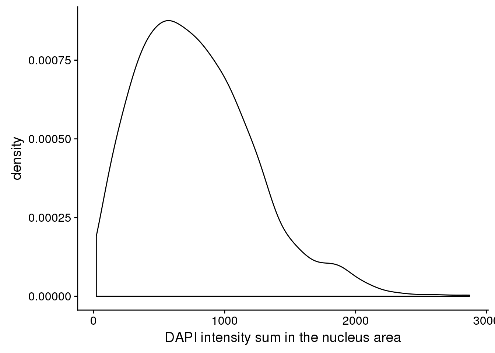
ggplot(dapi, aes(x=dapi_sum, colour = plate)) +
geom_density() +
labs(main = "DAPI distribution by plate", x="DAPI intensity sum in the nucleus area")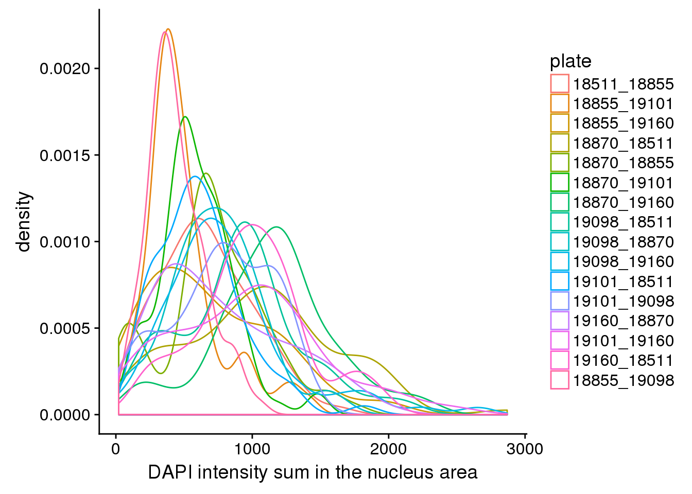
How about DAPI noise? Quite different between plates. But consider that the range of pixel intensity is 0 to 1, then .06 noise is trivial. Considering the differences though, I corrected the DAPI sum for the background noise by shifting the intensities down using the mean of background noise. There was not much difference between mean and median.
dapi_noise <- do.call(rbind, lapply(1:length(plates), function(index) {
ints <- readRDS(paste0("/project2/gilad/fucci-seq/intensities_stats/",plates[index],".stats.rds"))
dapi_sum <- with(ints, size*dapi.fore.mean)
data.frame(plate=plates[index], well=ints$wellID,
dapi.fore.mean=ints$dapi.fore.mean,
dapi.back.mean=ints$dapi.back.mean)
}))
plot_grid(
ggplot(dapi_noise, aes(x=plate, y=dapi.back.mean, colour = plate)) +
geom_boxplot(cex=.6) + labs(main="DAPI background mean intensity"),
ggplot(dapi_noise, aes(x=plate, y=dapi.fore.mean, colour = plate)) +
geom_boxplot(cex=.6) + labs(main="DAPI foreground mean intensity") )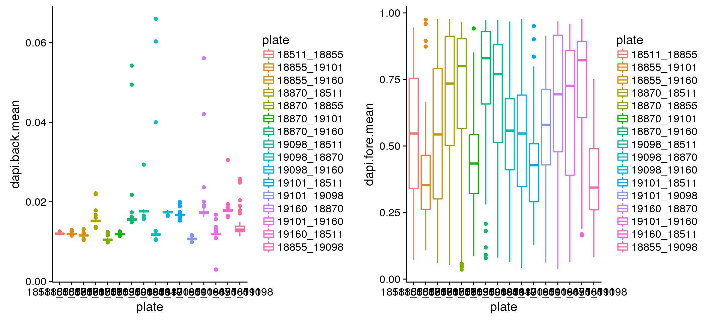
DAPI sum adjusted for noise. Almost no difference compared to when not adjusted.
dapi_adj <- do.call(rbind, lapply(1:length(plates), function(index) {
ints <- readRDS(paste0("/project2/gilad/fucci-seq/intensities_stats/",plates[index],".stats.rds"))
dapi_sum <- with(ints, size*(dapi.fore.mean-dapi.back.mean))
data.frame(plate=plates[index], well=ints$wellID, dapi_sum=dapi_sum)
}) )
# check how much they differ; almost no difference
plot(dapi$dapi_sum, dapi_adj$dapi_sum)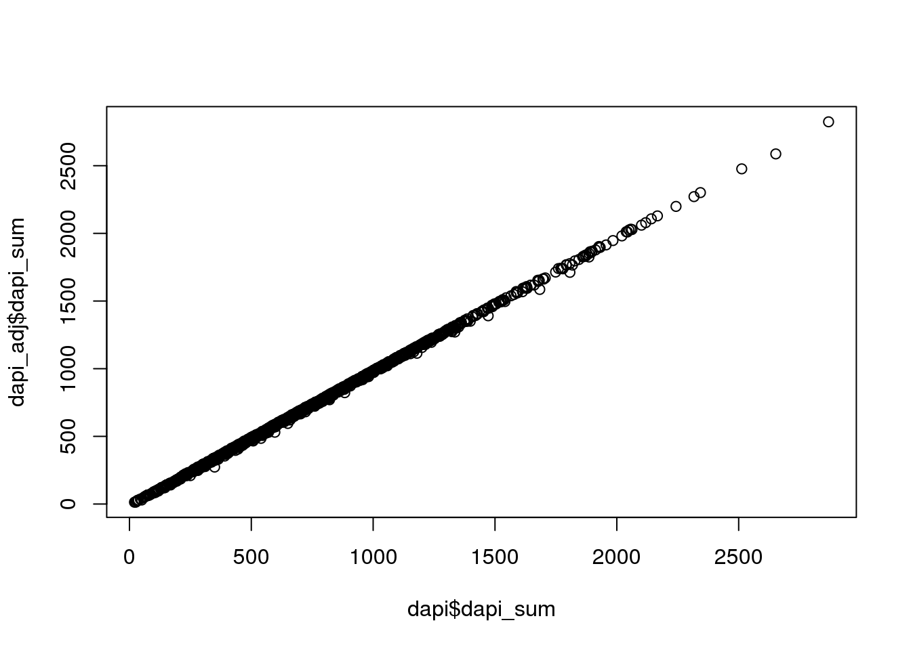
But fine. Within each plate or across plates, what’s the relationship between DAPI an Green/Red?
Prepare a data for investigating the association between DAPI and green/red.
eval <- do.call(rbind, lapply(1:length(plates), function(index) {
ints <- readRDS(paste0("/project2/gilad/fucci-seq/intensities_stats/",plates[index],".stats.rds"))
dapi_sum <- with(ints, size*dapi.fore.mean)
data.frame(plate=plates[index], well=ints$wellID,
dapi_sum=dapi_sum,
rfp.fore.mean=ints$rfp.fore.mean, rfp.fore.q05=ints$rfp.fore.q05,
rfp.back.mean=ints$rfp.back.mean, rfp.back.q05=ints$rfp.back.q05,
gfp.fore.mean=ints$gfp.fore.mean, gfp.fore.q05=ints$gfp.fore.q05,
gfp.back.mean=ints$gfp.back.mean, gfp.back.q05=ints$gfp.back.q05)
}) )
eval <- eval %>% mutate(dapi_5quant=ntile(dapi_sum,5))All plates. Green versus red with DAPI coloring each nuclei. Not easy to see…
eval %>%
ggplot + aes(x=rfp.fore.mean, y=gfp.fore.mean, colour= dapi_5quant) +
geom_point(cex=1, alpha=.7) 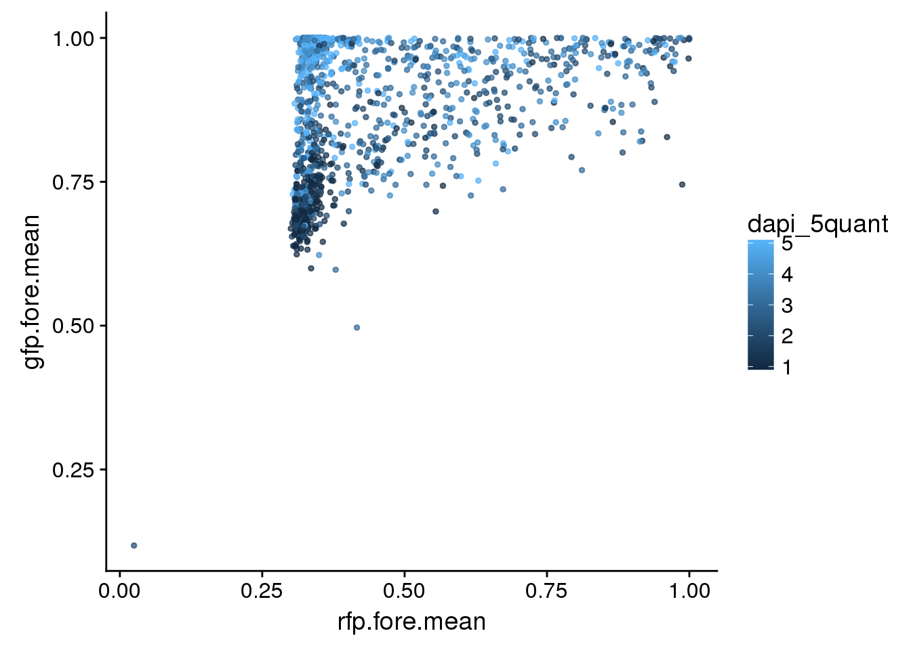
eval %>%
ggplot + aes(x=rfp.fore.mean-rfp.back.mean,
y=gfp.fore.mean-gfp.back.mean,
colour= dapi_5quant) +
geom_point(cex=1, alpha=.7) +
labs(x="Red signal", y = "Green signal") 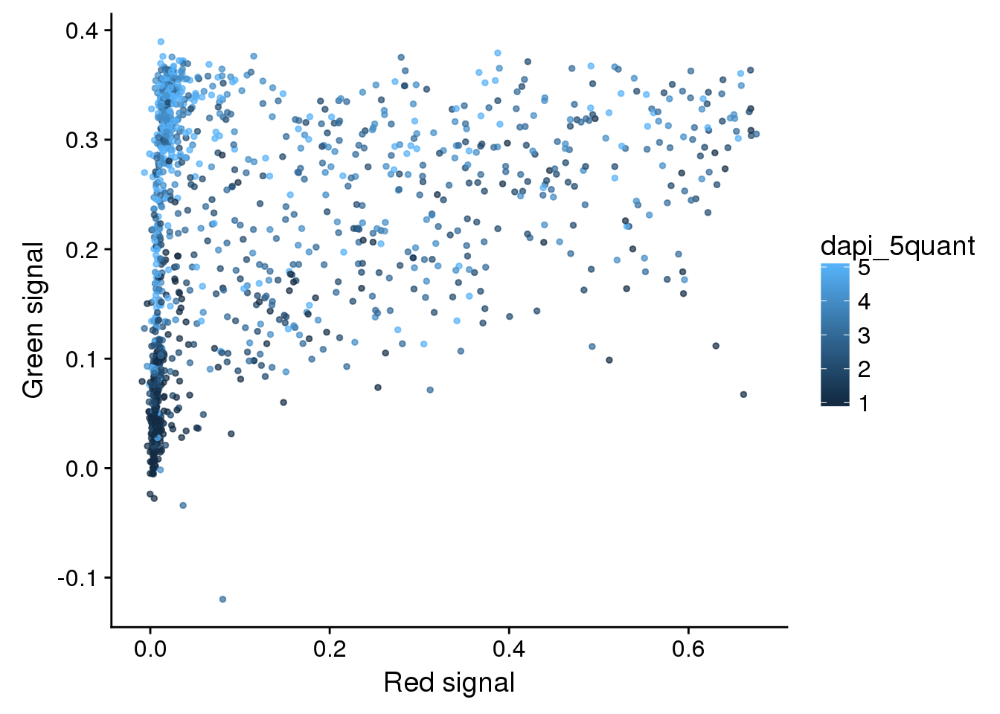
Take green/red versus DAPI.
plot_grid(
ggplot(data=eval, aes(x=dapi_sum, y = rfp.fore.mean-rfp.back.mean)) +
geom_point(alpha=.5, col="red") + labs(x="DAPI", y="Red signals"),
ggplot(data=eval, aes(x=dapi_sum, y = gfp.fore.mean-gfp.back.mean)) +
geom_point(alpha=.5, col="green") + labs(x="DAPI", y = "Green signals"))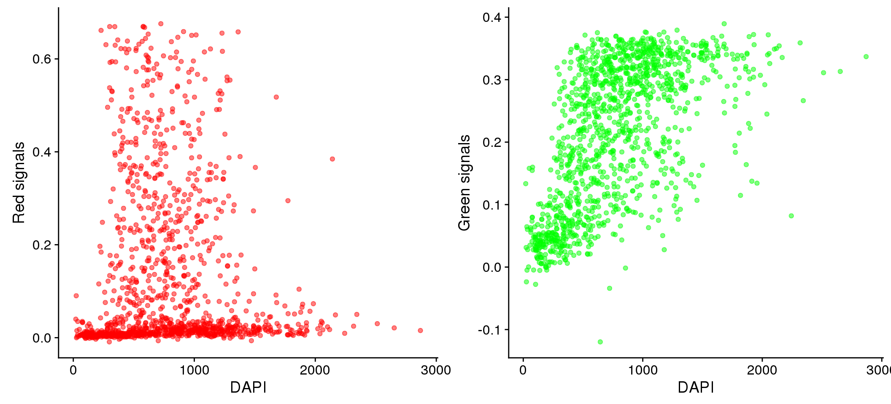
The three dimensional plots are dfficult to see. Let me plot green vs. red for each bin of DAPI.
# fucci green and red density versus DAPI: signal percent
ggplot(data=eval, aes(x=rfp.fore.mean-rfp.back.mean)) + geom_density(fill = "red", alpha=.5) +
facet_wrap(~as.factor(dapi_5quant), nrow=1) +
labs(main = "Red by DAPI quantiles", x = "Red signal (fore-back)")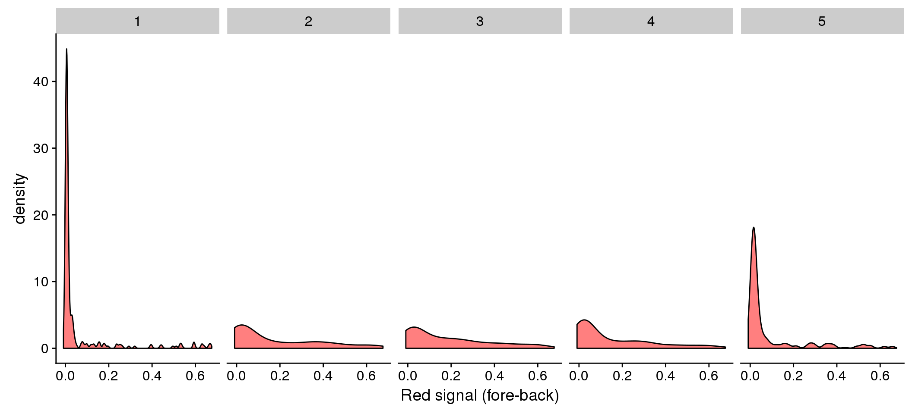
ggplot(data=eval, aes(x=gfp.fore.mean-gfp.back.mean)) + geom_density(fill = "green", alpha=.5) +
facet_wrap(~as.factor(dapi_5quant), nrow=1) +
labs(main = "Green by DAPI quantiles", x = "Green signal (fore-back)")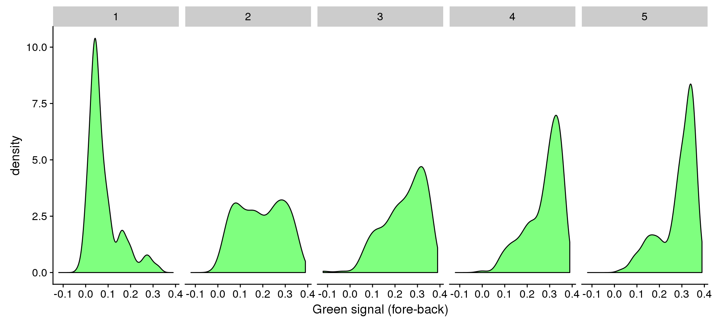
Individual differences in DAPI versus Green/Red.
eval %>%
ggplot + aes(x=dapi_sum, y = rfp.fore.mean-rfp.back.mean) +
geom_point(alpha=.5, col="red") + labs(x="DAPI", y="Red signals") +
facet_wrap(~plate, ncol = 4)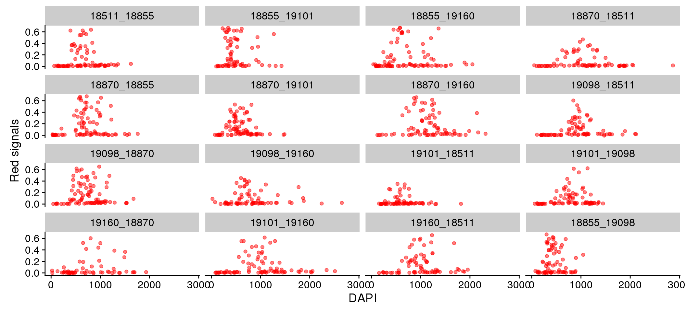
eval %>%
ggplot + aes(x=dapi_sum, y = gfp.fore.mean-gfp.back.mean) +
geom_point(alpha=.5, col="green") + labs(x="DAPI", y="Green signals") +
facet_wrap(~plate, ncol = 4)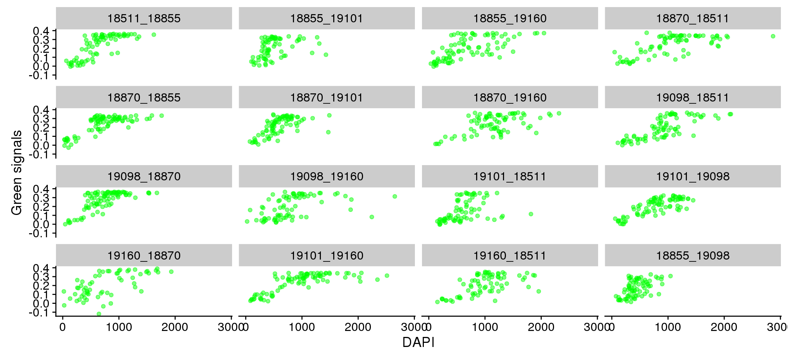
Mean versus median. This shows that at high pixel intensity, the signal intensites are mostly saturated. And this is more so for Green than for Red. But note that this may have to do with the area from which we compute the pixel intensities. For many of the single cell samples, the cell cycle proteins are outside of the nucleus and are mostly concentrated at the nucleus. If we consider the area outside of the nucleus, we may be better differentiation between signals at high pixel intensities.
plot_grid(
ggplot(eval, aes(x=rfp.fore.q05, y=rfp.fore.mean)) +
geom_point(cex=.6, col = "red") +
labs(main="Red intensity", x="Median", y="Mean"),
ggplot(eval, aes(x=gfp.fore.q05, y=gfp.fore.mean)) +
geom_point(cex=.6, col = "green") +
labs(main="Green intensity", x="Median", y="Mean") )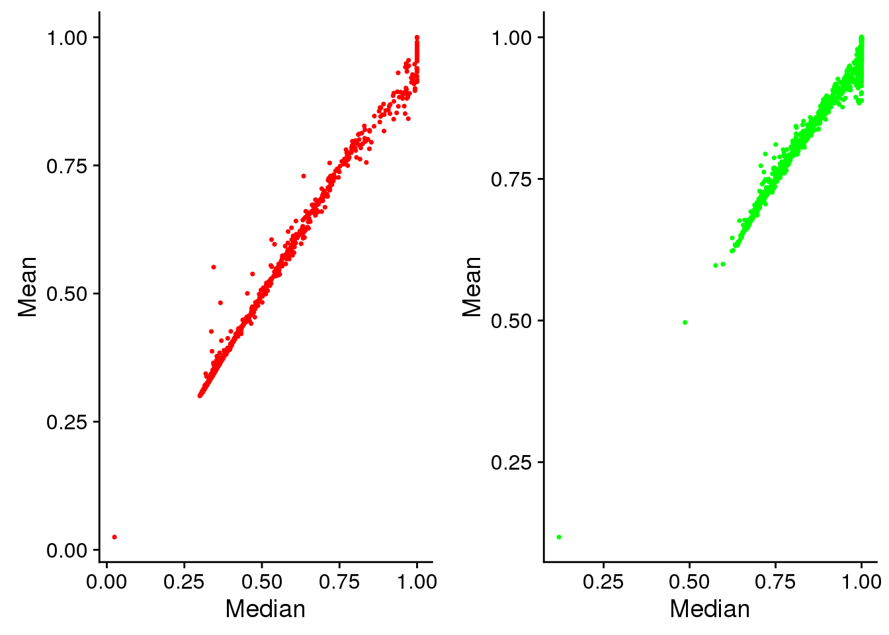
Background variation between plates.
plot_grid(
ggplot(eval, aes(x=plate, y=rfp.back.mean, colour = plate)) +
geom_boxplot(cex=.6) + labs(main="Red background mean intensity"),
ggplot(eval, aes(x=plate, y=gfp.back.mean, colour = plate)) +
geom_boxplot(cex=.6) + labs(main="Green background mean intensity") )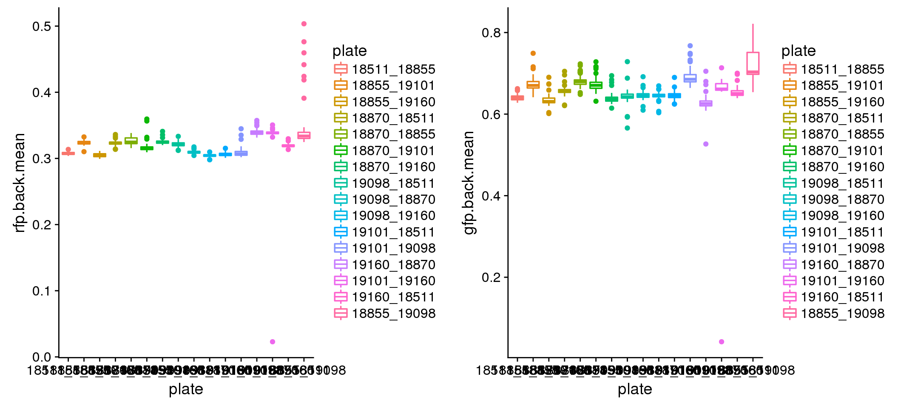
sessionInfo()R version 3.4.1 (2017-06-30)
Platform: x86_64-redhat-linux-gnu (64-bit)
Running under: Scientific Linux 7.2 (Nitrogen)
Matrix products: default
BLAS/LAPACK: /usr/lib64/R/lib/libRblas.so
locale:
[1] LC_CTYPE=en_US.UTF-8 LC_NUMERIC=C
[3] LC_TIME=en_US.UTF-8 LC_COLLATE=en_US.UTF-8
[5] LC_MONETARY=en_US.UTF-8 LC_MESSAGES=en_US.UTF-8
[7] LC_PAPER=en_US.UTF-8 LC_NAME=C
[9] LC_ADDRESS=C LC_TELEPHONE=C
[11] LC_MEASUREMENT=en_US.UTF-8 LC_IDENTIFICATION=C
attached base packages:
[1] stats graphics grDevices utils datasets methods base
other attached packages:
[1] bindrcpp_0.2 dplyr_0.7.4 wesanderson_0.3.2 cowplot_0.8.0
[5] ggplot2_2.2.1
loaded via a namespace (and not attached):
[1] Rcpp_0.12.13 bindr_0.1 knitr_1.17 magrittr_1.5
[5] munsell_0.4.3 colorspace_1.3-2 R6_2.2.2 rlang_0.1.2
[9] stringr_1.2.0 plyr_1.8.4 tools_3.4.1 grid_3.4.1
[13] gtable_0.2.0 git2r_0.19.0 htmltools_0.3.6 assertthat_0.2.0
[17] yaml_2.1.14 lazyeval_0.2.0 rprojroot_1.2 digest_0.6.12
[21] tibble_1.3.4 glue_1.1.1 evaluate_0.10.1 rmarkdown_1.6
[25] labeling_0.3 stringi_1.1.5 compiler_3.4.1 scales_0.5.0
[29] backports_1.1.1 pkgconfig_2.0.1 sessionInfo()R version 3.4.1 (2017-06-30)
Platform: x86_64-redhat-linux-gnu (64-bit)
Running under: Scientific Linux 7.2 (Nitrogen)
Matrix products: default
BLAS/LAPACK: /usr/lib64/R/lib/libRblas.so
locale:
[1] LC_CTYPE=en_US.UTF-8 LC_NUMERIC=C
[3] LC_TIME=en_US.UTF-8 LC_COLLATE=en_US.UTF-8
[5] LC_MONETARY=en_US.UTF-8 LC_MESSAGES=en_US.UTF-8
[7] LC_PAPER=en_US.UTF-8 LC_NAME=C
[9] LC_ADDRESS=C LC_TELEPHONE=C
[11] LC_MEASUREMENT=en_US.UTF-8 LC_IDENTIFICATION=C
attached base packages:
[1] stats graphics grDevices utils datasets methods base
other attached packages:
[1] bindrcpp_0.2 dplyr_0.7.4 wesanderson_0.3.2 cowplot_0.8.0
[5] ggplot2_2.2.1
loaded via a namespace (and not attached):
[1] Rcpp_0.12.13 bindr_0.1 knitr_1.17 magrittr_1.5
[5] munsell_0.4.3 colorspace_1.3-2 R6_2.2.2 rlang_0.1.2
[9] stringr_1.2.0 plyr_1.8.4 tools_3.4.1 grid_3.4.1
[13] gtable_0.2.0 git2r_0.19.0 htmltools_0.3.6 assertthat_0.2.0
[17] yaml_2.1.14 lazyeval_0.2.0 rprojroot_1.2 digest_0.6.12
[21] tibble_1.3.4 glue_1.1.1 evaluate_0.10.1 rmarkdown_1.6
[25] labeling_0.3 stringi_1.1.5 compiler_3.4.1 scales_0.5.0
[29] backports_1.1.1 pkgconfig_2.0.1 This R Markdown site was created with workflowr